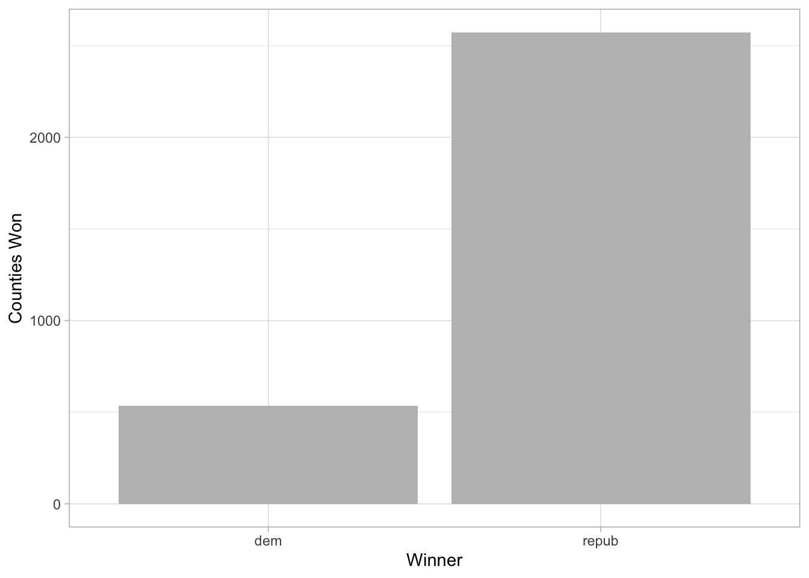
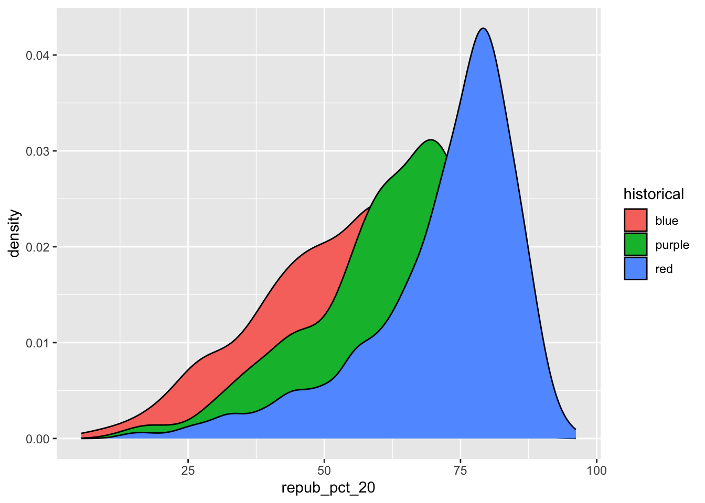
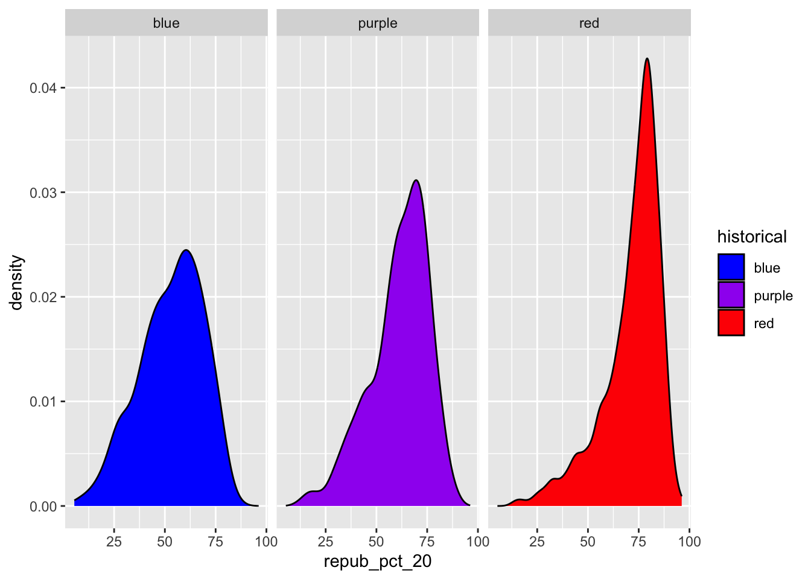

Use this file for practice with the bivariate viz in-class activity. Refer to the class website for details.
# Load dataelections <-read.csv("https://mac-stat.github.io/data/election_2020_county.csv")# Check it outhead(elections)
state_name state_abbr historical county_name county_fips total_votes_20
1 Alabama AL red Autauga County 1001 27770
2 Alabama AL red Baldwin County 1003 109679
3 Alabama AL red Barbour County 1005 10518
4 Alabama AL red Bibb County 1007 9595
5 Alabama AL red Blount County 1009 27588
6 Alabama AL red Bullock County 1011 4613
repub_pct_20 dem_pct_20 winner_20 total_votes_16 repub_pct_16 dem_pct_16
1 71.44 27.02 repub 24661 73.44 23.96
2 76.17 22.41 repub 94090 77.35 19.57
3 53.45 45.79 repub 10390 52.27 46.66
4 78.43 20.70 repub 8748 76.97 21.42
5 89.57 9.57 repub 25384 89.85 8.47
6 24.84 74.70 dem 4701 24.23 75.09
winner_16 total_votes_12 repub_pct_12 dem_pct_12 winner_12 total_population
1 repub 23909 72.63 26.58 repub 54907
2 repub 84988 77.39 21.57 repub 187114
3 repub 11459 48.34 51.25 dem 27321
4 repub 8391 73.07 26.22 repub 22754
5 repub 23980 86.49 12.35 repub 57623
6 dem 5318 23.51 76.31 dem 10746
percent_white percent_black percent_asian percent_hispanic per_capita_income
1 76 18 1 2 24571
2 83 9 1 4 26766
3 46 46 0 5 16829
4 75 22 0 2 17427
5 88 1 0 8 20730
6 22 71 0 6 18628
median_rent median_age
1 668 37.5
2 693 41.5
3 382 38.3
4 351 39.4
5 403 39.6
6 276 39.6
# Load packageslibrary(ggplot2)
Exercise 0: Review
Part A
# Plot of winner variableggplot(elections, aes(x = winner_20)) +geom_bar(fill ="grey") +labs(x ="Winner", y ="Counties Won") +theme_light()

Part B
# Plot repub_pct_20 variableggplot(elections, aes(x = repub_pct_20)) +geom_histogram(binwidth =10, color ="white", fill ="grey") +labs(x ="% Republican", y ="# Counties") +theme_light()
These two graphs tell us that a) Republicans won the vast majority of counties in 2020 and b) they won most of those counties by >50%. However, Democrats won in 2020, leading me to assume that a population comparison would be a more effective data visualization.
Exercise 1: Quantitative vs Quantitative Intuition Check
Scatterplot setup: geom_scatterplot? With the lead function ggplot(elections, aes(x = , y = )) rather than just x =.
Exercise 2: 2 Quantitiative Variables
Scatterplots
# Set up the plotting frame# How does this differ than the frame for our histogram of repub_pct_20 alone?# Frame has variables on both axesggplot(elections, aes(y = repub_pct_20, x = repub_pct_16))
# Add a layer of points for each county# Take note of the geom!ggplot(elections, aes(y = repub_pct_20, x = repub_pct_16)) +geom_point()
# Change the shape of the points# What happens if you change the shape to another number?ggplot(elections, aes(y = repub_pct_20, x = repub_pct_16)) +geom_point(shape =3)
# Change the shape of the points# What happens if you change the shape to another number?ggplot(elections, aes(y = repub_pct_20, x = repub_pct_16)) +geom_point(shape =40)
# YOU TRY: Modify the code to make the points "orange"# NOTE: Try to anticipate if "color" or "fill" will be useful here. Then try both.ggplot(elections, aes(y = repub_pct_20, x = repub_pct_16)) +geom_point(color ="pink")
# YOU TRY: Modify the code to make the points "orange"# NOTE: Try to anticipate if "color" or "fill" will be useful here. Then try both.ggplot(elections, aes(y = repub_pct_20, x = repub_pct_16)) +geom_point(fill ="pink")
# YOU TRY: Modify the code to make the points "orange"# NOTE: Try to anticipate if "color" or "fill" will be useful here. Then try both.# Color is the only command that works with dot plotsggplot(elections, aes(y = repub_pct_20, x = repub_pct_16)) +geom_point(color ="pink", fill ="red")
# Add a layer that represents each county by the state it's in# Take note of the geom and the info it needs to run!ggplot(elections, aes(y = repub_pct_20, x = repub_pct_16)) +geom_text(aes(label = state_abbr))
Exercise 3: Reflect
Relationship is very strong, linear; most counties are similar to the 2016 election.
The direction is positive.
Most deviations are from counties skewing more Republican in 2020. These counties are mostly in Utah, Idaho, and Texas. This may be explained by interstate migration (ID & UT) or voter disenfranchisement tactics (TX), or could just be due to perceived inadequacies of the Democratic establishment.
Exercise 4: Visualizing trend
ggplot(elections, aes(y = repub_pct_20, x = repub_pct_16)) +geom_point() +geom_smooth()
`geom_smooth()` using method = 'gam' and formula = 'y ~ s(x, bs = "cs")'
Part A
# Construct linear plot from point dataggplot(elections, aes(y = repub_pct_20, x = repub_pct_16)) +geom_smooth()
`geom_smooth()` using method = 'gam' and formula = 'y ~ s(x, bs = "cs")'
Part B
# Find best linear model; line of best fitggplot(elections, aes(y = repub_pct_20, x = repub_pct_16)) +geom_point() +geom_smooth(method ="lm")
`geom_smooth()` using formula = 'y ~ x'
Exercise 5: Your Turn
# Scatterplot of repub_pct_20 vs median_rentggplot(elections, aes(y = repub_pct_20, x = median_rent)) +geom_point() +geom_smooth()
`geom_smooth()` using method = 'gam' and formula = 'y ~ s(x, bs = "cs")'
# Scatterplot of repub_pct_20 vs median_ageggplot(elections, aes(y = repub_pct_20, x = median_age)) +geom_point() +geom_smooth()
`geom_smooth()` using method = 'gam' and formula = 'y ~ s(x, bs = "cs")'
Median rent is a slightly better predictor of election outcomes: Republican votes negatively correlate with higher rents, except for in the lowest rent areas.
Exercise 6: A Sad Scatterplot
ggplot(elections, aes(y = repub_pct_20, x = historical)) +geom_point()
This does not work because the data is not legible and except for a few outliers it is impossible to identify any real trends.
Exercise 7: Quantitative vs Categorical – Violins & Boxes
On average, county support is >50% on average, but is lower in blue sttes than purple states, and lower in purple states than in red states.
Exercise 8: Quantitative vs Categorical – Intuition Check
ggplot(elections, aes(x = repub_pct_20, fill = historical)) +geom_density()

Exercise 9: Quantitative vs Categorical – Density Plots
# Name two "bad" things about this plot# 1. Colors don't mqtch, blue and purple graphs not fully visible.ggplot(elections, aes(x = repub_pct_20, fill = historical)) +geom_density()
# scale_fill_manual allows us to pick the fill colors by hand.ggplot(elections, aes(x = repub_pct_20, fill = historical)) +geom_density() +scale_fill_manual(values =c("blue", "purple", "red"))
# alpha = 0.5 reduces the opacity of the fill colors in order to see the rest of the data.# Play around with different values of alpha, between 0 and 1ggplot(elections, aes(x = repub_pct_20, fill = historical)) +geom_density(alpha =0.5) +scale_fill_manual(values =c("blue", "purple", "red"))
# facet_wrap facets each peak, as divided by historical data.ggplot(elections, aes(x = repub_pct_20, fill = historical)) +geom_density() +scale_fill_manual(values =c("blue", "purple", "red")) +facet_wrap(~ historical)

# Let's try a similar grouping strategy with a histogram instead of density plot.# Why is this terrible? This doesn't work because the blue data is barely visible and doesn't tell us anythingggplot(elections, aes(x = repub_pct_20, fill = historical)) +geom_histogram(color ="white") +scale_fill_manual(values =c("blue", "purple", "red"))
`stat_bin()` using `bins = 30`. Pick better value with `binwidth`.
Exercise 10
Density plots are more visually compelling and is easier to compare the full set of data, while box plots better capture data variation.
Exercise 11: Categorical vs Categorical – Intuition Check
# A stacked bar plot# How are the "historical" and "winner_20" variables mapped to the plot, i.e. what roles do they play?ggplot(elections, aes(x = historical, fill = winner_20)) +geom_bar()
# A faceted bar plotggplot(elections, aes(x = winner_20)) +geom_bar() +facet_wrap(~ historical)
# A side-by-side bar plot# Note the new argument to geom_barggplot(elections, aes(x = historical, fill = winner_20)) +geom_bar(position ="dodge")
# A proportional bar plot# Note the new argument to geom_barggplot(elections, aes(x = historical, fill = winner_20)) +geom_bar(position ="fill")
date location mintemp maxtemp rainfall evaporation sunshine
1 2020-01-01 Wollongong 17.1 23.1 0 NA NA
2 2020-01-02 Wollongong 17.7 24.2 0 NA NA
3 2020-01-03 Wollongong 19.7 26.8 0 NA NA
4 2020-01-04 Wollongong 20.4 35.5 0 NA NA
5 2020-01-05 Wollongong 19.8 21.4 0 NA NA
6 2020-01-06 Wollongong 18.3 22.9 0 NA NA
windgustdir windgustspeed winddir9am winddir3pm windspeed9am windspeed3pm
1 SSW 39 SSW SSE 20 15
2 SSW 37 S ENE 13 15
3 NE 41 NNW NNE 7 17
4 SSW 78 NE NNE 15 17
5 SSW 57 SSW S 31 35
6 NE 35 ESE NE 17 20
humidity9am humidity3pm pressure9am pressure3pm cloud9am cloud3pm temp9am
1 69 64 1014.9 1014.0 8 1 19.1
2 72 54 1020.1 1017.7 7 1 19.8
3 72 71 1017.5 1013.0 6 NA 23.4
4 77 69 1008.8 1003.9 NA NA 24.5
5 70 75 1018.9 1019.9 NA 7 20.7
6 71 71 1021.2 1018.2 NA NA 20.9
temp3pm raintoday risk_mm raintomorrow
1 22.9 No 0.0 No
2 23.6 No 0.0 No
3 25.7 No 0.0 No
4 26.7 No 0.0 No
5 20.0 No 0.0 No
6 22.6 No 0.8 No
# How do 3pm temperatures (temp3pm) differ by location?ggplot(weather, aes(x = location, y = temp3pm)) +geom_violin() +theme_light()
Warning: Removed 19 rows containing non-finite outside the scale range
(`stat_ydensity()`).
# How might we predict the 3pm temperature (temp3pm) by the 9am temperature (temp9am)?ggplot(weather, aes(x = temp9am, y = temp3pm)) +geom_point() +geom_smooth() +theme_light()
`geom_smooth()` using method = 'gam' and formula = 'y ~ s(x, bs = "cs")'
Warning: Removed 27 rows containing non-finite outside the scale range
(`stat_smooth()`).
Warning: Removed 27 rows containing missing values or values outside the scale range
(`geom_point()`).
# How do the number of rainy days (raintoday) differ by location?ggplot(weather, aes(x = location, fill = raintoday)) +geom_bar() +theme_light()
Optional
Part A: Joy Plots
# Install ggridges packagelibrary(ggridges)library(forcats)# Make our first joy plot# THINK: What DON'T you like about this?ggplot(elections, aes(x = repub_pct_20, y = state_abbr)) +geom_density_ridges()
Picking joint bandwidth of 4.43
# Let's put the states in order by Republican support, not alphabet# How do you think fct_reorder works? We'll learn about this later in the semester.ggplot(elections, aes(x = repub_pct_20, y =fct_reorder(state_abbr, repub_pct_20), fill = historical)) +geom_density_ridges(alpha =0.5) +scale_fill_manual(values =c("blue", "purple", "red")) +labs(x ="% Republican", y ="State", fill ="Historical Trends") +theme_light()
Picking joint bandwidth of 4.43
Source Code
---title: "Bivariate Viz"number-sections: false---Use this file for practice with the **bivariate viz** in-class activity. Refer to the class website for details.```{r}# Load dataelections <-read.csv("https://mac-stat.github.io/data/election_2020_county.csv")# Check it outhead(elections)# Load packageslibrary(ggplot2)```## Exercise 0: Review### Part A```{r}# Plot of winner variableggplot(elections, aes(x = winner_20)) +geom_bar(fill ="grey") +labs(x ="Winner", y ="Counties Won") +theme_light()```### Part B```{r}# Plot repub_pct_20 variableggplot(elections, aes(x = repub_pct_20)) +geom_histogram(binwidth =10, color ="white", fill ="grey") +labs(x ="% Republican", y ="# Counties") +theme_light()```These two graphs tell us that a) Republicans won the vast majority of counties in 2020 and b) they won most of those counties by >50%. However, Democrats won in 2020, leading me to assume that a population comparison would be a more effective data visualization.## Exercise 1: Quantitative vs Quantitative Intuition CheckScatterplot setup: `geom_scatterplot`? With the lead function `ggplot(elections, aes(x = , y = ))` rather than just `x = `.## Exercise 2: 2 Quantitiative VariablesScatterplots```{r}# Set up the plotting frame# How does this differ than the frame for our histogram of repub_pct_20 alone?# Frame has variables on both axesggplot(elections, aes(y = repub_pct_20, x = repub_pct_16))``````{r}# Add a layer of points for each county# Take note of the geom!ggplot(elections, aes(y = repub_pct_20, x = repub_pct_16)) +geom_point()``````{r}# Change the shape of the points# What happens if you change the shape to another number?ggplot(elections, aes(y = repub_pct_20, x = repub_pct_16)) +geom_point(shape =3)``````{r}# Change the shape of the points# What happens if you change the shape to another number?ggplot(elections, aes(y = repub_pct_20, x = repub_pct_16)) +geom_point(shape =40)``````{r}# YOU TRY: Modify the code to make the points "orange"# NOTE: Try to anticipate if "color" or "fill" will be useful here. Then try both.ggplot(elections, aes(y = repub_pct_20, x = repub_pct_16)) +geom_point(color ="pink")``````{r}# YOU TRY: Modify the code to make the points "orange"# NOTE: Try to anticipate if "color" or "fill" will be useful here. Then try both.ggplot(elections, aes(y = repub_pct_20, x = repub_pct_16)) +geom_point(fill ="pink")``````{r}# YOU TRY: Modify the code to make the points "orange"# NOTE: Try to anticipate if "color" or "fill" will be useful here. Then try both.# Color is the only command that works with dot plotsggplot(elections, aes(y = repub_pct_20, x = repub_pct_16)) +geom_point(color ="pink", fill ="red")``````{r}# Add a layer that represents each county by the state it's in# Take note of the geom and the info it needs to run!ggplot(elections, aes(y = repub_pct_20, x = repub_pct_16)) +geom_text(aes(label = state_abbr))```## Exercise 3: Reflect - Relationship is very strong, linear; most counties are similar to the 2016 election. - The direction is positive. - Most deviations are from counties skewing more Republican in 2020. These counties are mostly in Utah, Idaho, and Texas. This may be explained by interstate migration (ID & UT) or voter disenfranchisement tactics (TX), or could just be due to perceived inadequacies of the Democratic establishment. ## Exercise 4: Visualizing trend```{r}ggplot(elections, aes(y = repub_pct_20, x = repub_pct_16)) +geom_point() +geom_smooth()```### Part A```{r}# Construct linear plot from point dataggplot(elections, aes(y = repub_pct_20, x = repub_pct_16)) +geom_smooth()```### Part B```{r}# Find best linear model; line of best fitggplot(elections, aes(y = repub_pct_20, x = repub_pct_16)) +geom_point() +geom_smooth(method ="lm")```## Exercise 5: Your Turn```{r}# Scatterplot of repub_pct_20 vs median_rentggplot(elections, aes(y = repub_pct_20, x = median_rent)) +geom_point() +geom_smooth()# Scatterplot of repub_pct_20 vs median_ageggplot(elections, aes(y = repub_pct_20, x = median_age)) +geom_point() +geom_smooth()```Median rent is a slightly better predictor of election outcomes: Republican votes negatively correlate with higher rents, *except* for in the lowest rent areas. ## Exercise 6: A Sad Scatterplot```{r}ggplot(elections, aes(y = repub_pct_20, x = historical)) +geom_point()```This does not work because the data is not legible and except for a few outliers it is impossible to identify any real trends.## Exercise 7: Quantitative vs Categorical – Violins & Boxes```{r}# Side-by-side violin plotsggplot(elections, aes(y = repub_pct_20, x = historical)) +geom_violin()``````{r}# Side-by-side boxplots (defined below)ggplot(elections, aes(y = repub_pct_20, x = historical)) +geom_boxplot()```On average, county support is >50% on average, but is lower in blue sttes than purple states, and lower in purple states than in red states.## Exercise 8: Quantitative vs Categorical – Intuition Check```{r}ggplot(elections, aes(x = repub_pct_20, fill = historical)) +geom_density()```## Exercise 9: Quantitative vs Categorical – Density Plots```{r}# Name two "bad" things about this plot# 1. Colors don't mqtch, blue and purple graphs not fully visible.ggplot(elections, aes(x = repub_pct_20, fill = historical)) +geom_density()``````{r}# scale_fill_manual allows us to pick the fill colors by hand.ggplot(elections, aes(x = repub_pct_20, fill = historical)) +geom_density() +scale_fill_manual(values =c("blue", "purple", "red"))``````{r}# alpha = 0.5 reduces the opacity of the fill colors in order to see the rest of the data.# Play around with different values of alpha, between 0 and 1ggplot(elections, aes(x = repub_pct_20, fill = historical)) +geom_density(alpha =0.5) +scale_fill_manual(values =c("blue", "purple", "red"))``````{r}# facet_wrap facets each peak, as divided by historical data.ggplot(elections, aes(x = repub_pct_20, fill = historical)) +geom_density() +scale_fill_manual(values =c("blue", "purple", "red")) +facet_wrap(~ historical)``````{r}# Let's try a similar grouping strategy with a histogram instead of density plot.# Why is this terrible? This doesn't work because the blue data is barely visible and doesn't tell us anythingggplot(elections, aes(x = repub_pct_20, fill = historical)) +geom_histogram(color ="white") +scale_fill_manual(values =c("blue", "purple", "red"))```## Exercise 10- Density plots are more visually compelling and is easier to compare the full set of data, while box plots better capture data variation.## Exercise 11: Categorical vs Categorical – Intuition Check```{r}ggplot(elections, aes(x = historical, fill = winner_20)) +geom_bar() +scale_fill_manual(values =c("red", "blue"))``````{r}ggplot(elections, aes(x = winner_20)) +geom_bar() +facet_wrap(~ historical)```## Exercise 12: Categorical vs Categorical```{r}# A stacked bar plot# How are the "historical" and "winner_20" variables mapped to the plot, i.e. what roles do they play?ggplot(elections, aes(x = historical, fill = winner_20)) +geom_bar()``````{r}# A faceted bar plotggplot(elections, aes(x = winner_20)) +geom_bar() +facet_wrap(~ historical)``````{r}# A side-by-side bar plot# Note the new argument to geom_barggplot(elections, aes(x = historical, fill = winner_20)) +geom_bar(position ="dodge")``````{r}# A proportional bar plot# Note the new argument to geom_barggplot(elections, aes(x = historical, fill = winner_20)) +geom_bar(position ="fill")```## Exercise 13: Practice (now or later)```{r}weather <-read.csv("https://mac-stat.github.io/data/weather_3_locations.csv")head(weather)``````{r}# How do 3pm temperatures (temp3pm) differ by location?ggplot(weather, aes(x = location, y = temp3pm)) +geom_violin() +theme_light()``````{r}# How might we predict the 3pm temperature (temp3pm) by the 9am temperature (temp9am)?ggplot(weather, aes(x = temp9am, y = temp3pm)) +geom_point() +geom_smooth() +theme_light()``````{r}# How do the number of rainy days (raintoday) differ by location?ggplot(weather, aes(x = location, fill = raintoday)) +geom_bar() +theme_light()```## Optional### Part A: Joy Plots```{r}# Install ggridges packagelibrary(ggridges)library(forcats)# Make our first joy plot# THINK: What DON'T you like about this?ggplot(elections, aes(x = repub_pct_20, y = state_abbr)) +geom_density_ridges()``````{r}# Let's put the states in order by Republican support, not alphabet# How do you think fct_reorder works? We'll learn about this later in the semester.ggplot(elections, aes(x = repub_pct_20, y =fct_reorder(state_abbr, repub_pct_20), fill = historical)) +geom_density_ridges(alpha =0.5) +scale_fill_manual(values =c("blue", "purple", "red")) +labs(x ="% Republican", y ="State", fill ="Historical Trends") +theme_light()```